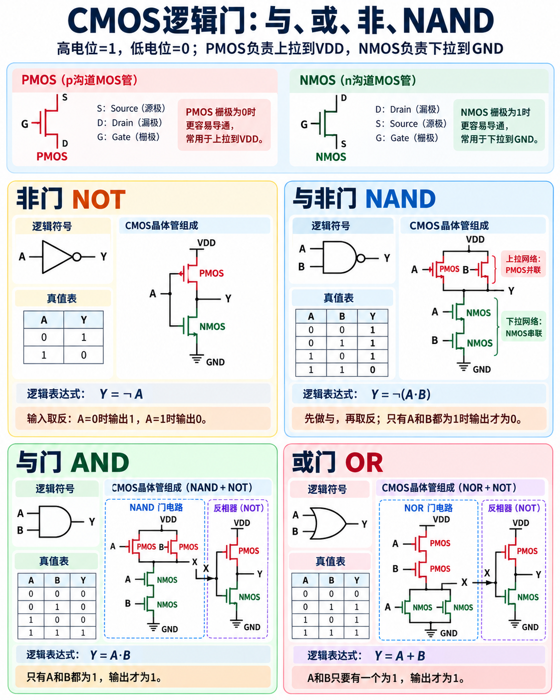

1.开关电路
物理电路中可以通过控制不同开关的状态，实现回路/断路，因此不同电路的组合就能体现复杂的逻辑

2.晶体管电路
2.1.机械开关用电磁铁的原理实现了电动控制电路，但由于机械开关运转中带有机械运动，就会造成元件磨损，且速度较慢，
不适合用来集成复杂的计算机电路
2.2.经过机械开关 -> 电子管 -> 晶体管的发展，能制造出大量的晶体管集成在芯片上的集成电路
2.3.晶体管电路的基本单元
